对程序员来说，编程语言就是武器，但有的武器好用，有的武器不好用，有的武器甚至会杀了自己。
C
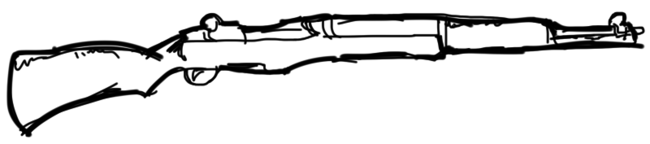
C 语言是 M1 式加兰德步枪，很老但可靠。
C++
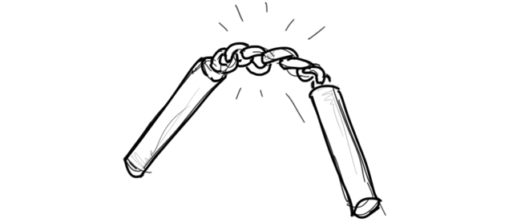
C++是双截棍，挥舞起来很强悍，很吸引人，但需要你多年的磨练来掌握，很多人希望改用别的武器。
Perl
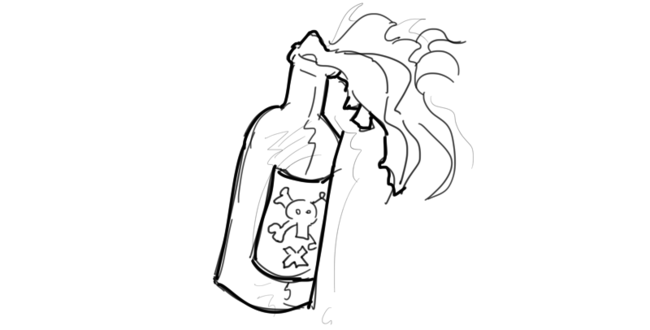
Perl 语言是燃烧弹，曾经在战场上很有用，但现在很少人使用它。
Java
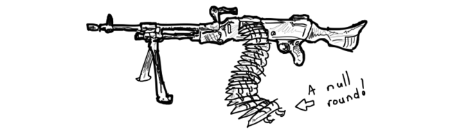
Java 是 M240 通用弹夹式自动机枪，有时它的弹夹是圆的，但有时候不是，如果不是，当你开火时，会遇到 NullPointerException 问题，枪就会爆炸，你被炸死。
Scala
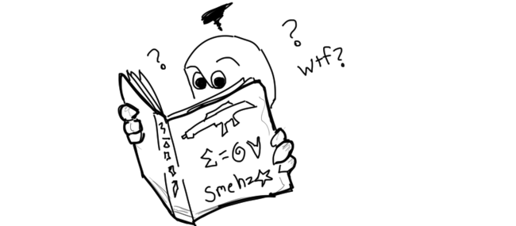
Scala 是 M240 通用机枪的变种，但它的使用手册是用一种看不懂的方言写的，很多人怀疑那只是一些梦话。
JavaScript
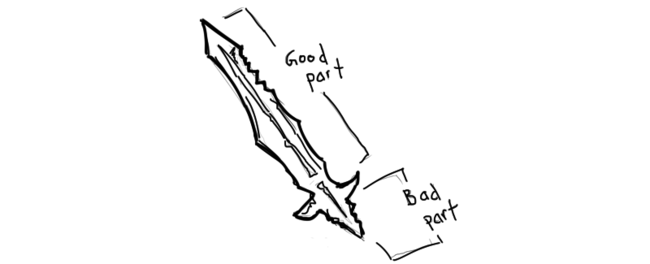
JavaScript 是一把宝剑，但没有剑柄。
Go
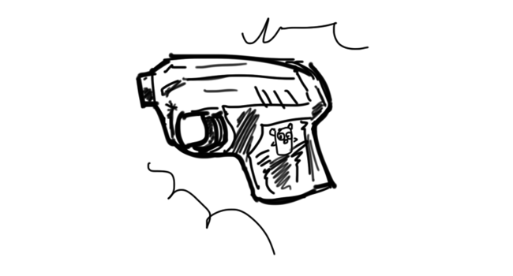
Go 语言是一种自制的“if err != nil”发令枪，每一次发射后，你都必须要检查它是否真的发射了。
Rust
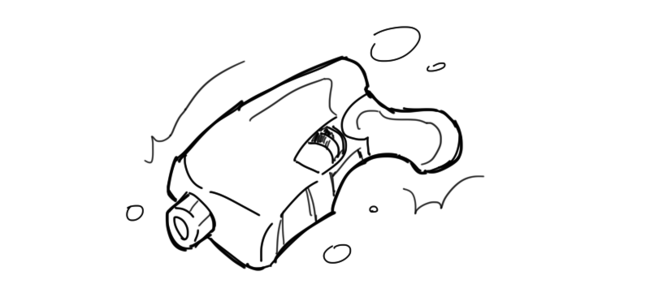
Rust 语言是一种 3D 打印出的枪。将来也许真的能派上用场。
Bash
bash 是一个十分碍手的锤子，你抡起它时会发现所有东西看起来都像钉子，尤其是你的指头。
Python
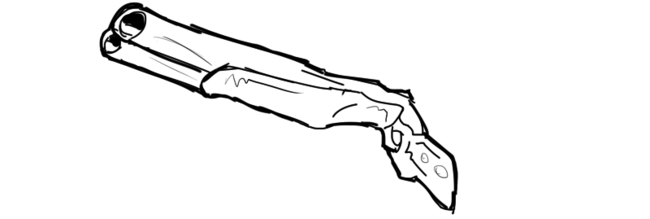
Python 是一种“v2/v3”双管枪，每次只能用一个管子发射，你永远不知道该用哪个管子发射好。
Ruby
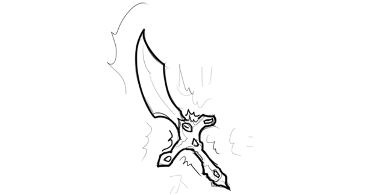
Ruby 是一把外嵌红宝石的宝刀，人们使用它通常是因为看起来很炫。
PHP
PHP 是水管子，你通常会把它的一段接到汽车的排气管，另一端插进车窗里，然后你坐进车里，开动引擎。
Mathematica
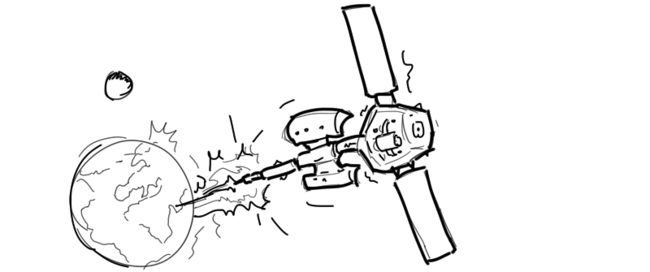
Mathematica 是一种地球低轨道粒子大炮，它也许能够干出很神奇的事情，但只有付得起费用的人才能使用它。
C#
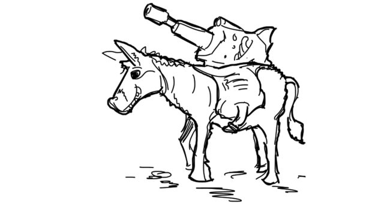
C#是一种强悍的激光大炮，架子一头驴子上，如果从驴子上卸下来，它好像就发不出激光。
Prolog
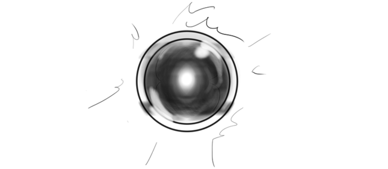
Prolog 语言是一种人工智能武器，你告诉它要做什么，它会照做不误，但之后，它会弄几个终结者出来，烧掉你的房子。
Lisp
Lisp 语言是一把剃须刀，有很多款式。只有寻求刺激和危险的人才会使用它。
来自techug.com。